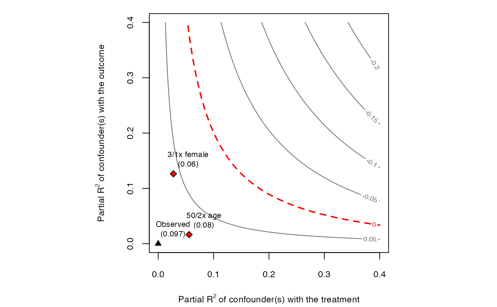

Convenience function to add bounds on a sensitivity contour plot created with ovb_contour_plot.
add_bound_to_contour(...) # S3 method for lm add_bound_to_contour( model, benchmark_covariates, kd = 1, ky = kd, bound_label = NULL, treatment = plot.env$treatment, reduce = plot.env$reduce, sensitivity.of = plot.env$sensitivity.of, label.text = TRUE, cex.label.text = 0.7, label.bump.x = plot.env$lim * (1/15), label.bump.y = plot.env$lim.y * (1/15), round = 2, ... ) # S3 method for numeric add_bound_to_contour( r2dz.x, r2yz.dx, bound_value = NULL, bound_label = NULL, label.text = TRUE, cex.label.text = 0.7, label.bump.x = plot.env$lim * (1/15), label.bump.y = plot.env$lim.y * (1/15), round = 2, ... )
| ... | arguments passed to other methods. |
|---|---|
| model | An |
| benchmark_covariates | The user has two options: (i) character vector of the names of covariates that will be used to bound the plausible strength of the unobserved confounders. Each variable will be considered separately; (ii) a named list with character vector names of covariates that will be used, as a group, to bound the plausible strength of the unobserved confounders. The names of the list will be used for the benchmark labels. Note: for factor variables with more than two levels, you need to provide the name of each level as encoded in the |
| kd | numeric vector. Parameterizes how many times stronger the confounder is related to the treatment in comparison to the observed benchmark covariate.
Default value is |
| ky | numeric vector. Parameterizes how many times stronger the confounder is related to the outcome in comparison to the observed benchmark covariate.
Default value is the same as |
| bound_label | label to bounds provided manually in |
| treatment | A character vector with the name of the treatment variable of the model. |
| reduce | Should the bias adjustment reduce or increase the
absolute value of the estimated coefficient? Default is |
| sensitivity.of | should the contour plot show adjusted estimates ( |
| label.text | should label texts be plotted? Default is |
| cex.label.text | size of the label text. |
| label.bump.x | bump on the x coordinate of label text. |
| label.bump.y | bump on the y coordinate of label text. |
| round | integer indicating the number of decimal places to be used for rounding. |
| r2dz.x | Hypothetical partial R2 of unobserved confounder Z with treatment D, given covariates X. |
| r2yz.dx | Hypothetical partial R2 of unobserved confounder Z with outcome Y, given covariates X and treatment D. |
| bound_value | value to be printed in label bound. |
The function adds bounds in an existing contour plot and returns `NULL`.
# runs regression model model <- lm(peacefactor ~ directlyharmed + age + farmer_dar + herder_dar + pastvoted + hhsize_darfur + female + village, data = darfur) # contour plot ovb_contour_plot(model = model, treatment = "directlyharmed")# add bound 3/1 times stronger than female add_bound_to_contour(model = model, benchmark_covariates = "female", kd = 3, ky = 1)# add bound 50/2 times stronger than age add_bound_to_contour(model = model, benchmark_covariates = "age", kd = 50, ky = 2)